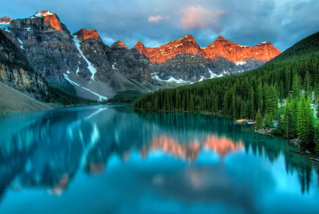

Moraine Lake at sunrise
James Wheeler / Pexels
MellowCamp / Photography credits
A thank-you to the photographers behind our outdoor landscapes.

James Wheeler / Pexels

Lum3n / Pexels

Pok Rie / Pexels

James Wheeler / Pexels

Jerry Kavan / Unsplash
Landscape photographs are used as outdoor inspiration. They do not depict MellowCamp products, team members or sponsored trips, and no endorsement by the photographers is implied. Product photographs come from the corresponding MellowCamp listings.